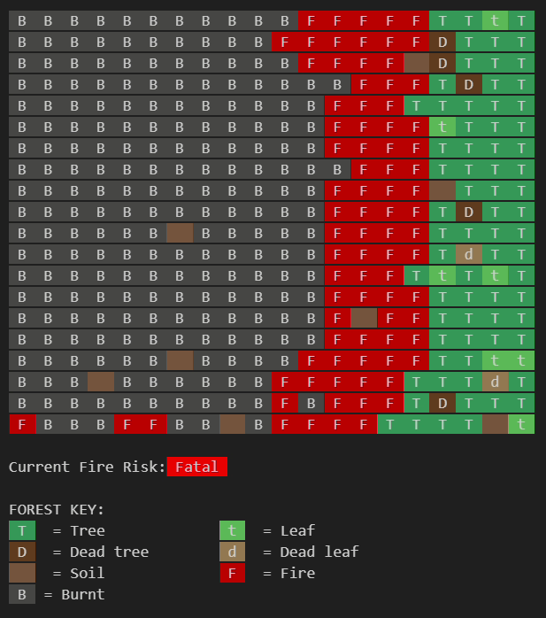
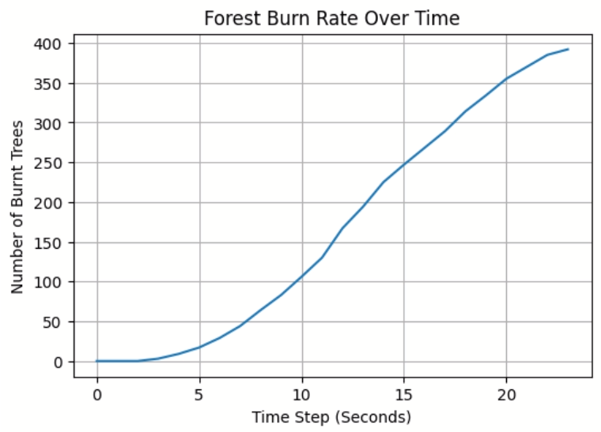
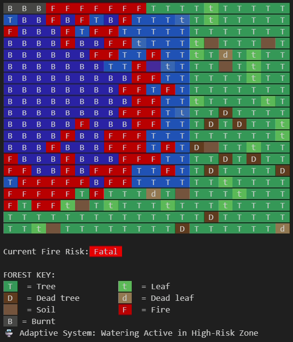

5. Evaluation
5.1 Brief Checklist
| Requirements | How I did this | |
|---|---|---|
| BR1: Embedded System Design | ✅ | I set up a Micro:bit to read temperature and light levels as soon as I press Button A |
| BR2: Data Collection | ✅ | I used datalogger to record and saved all the sensor data. |
| BR3: Process Simulation | ✅ | I made the Micro:bit show a fire icon when the temp and light levels got too high. |
| AR1: Disaster Risk Modelling | ✅ | I made a model to predict fire spread and risk based on data using Python. |
| AR2: What-if simulations | ✅ | I found that high temp and light caused the fire to destroy the forest quickly. |
| AR3: Adaptive System | ✅ | I added an adaptive sprinkler system that changes and supress fire. |
5.2 Meeting end user's needs
| Needs of End Users | How I did this | |
|---|---|---|
Students: General Public: |
✅ |
  |
Researchers: |
✅ | |
Environment Policymakers: |
✅ |
 |
5.3 How I would futher improve this project
- I would move away from guessing environmental variables. Now, my model assumes humidity based on temperature and light, but adding BME280 humidity sensor provides actual humidity data. This makes the ignition probability more accurate.
- I would change how the model handles the data. Instead of using the average values from the csv, I would make the model read through every single row. This way the simulation will react with real-time changes in the environment. This makes the forest response more dynamic.